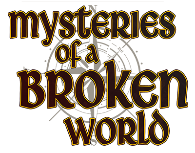

This is part three in a series of posts about designing a new OSR game. You can find the previous two here:
Since the last post, I've been doing a fair amount of work on the OSR game. Enough that it now has a title: Mysteries of a Broken World. The logo above is the official one for the line.
That first bit of news is probably the most milestone-y. I've also fleshed out more of the rules, mostly around character creation. While it's going to be a work in progress for quite awhile, you can view the latest playtest version of the rules here:
The above document is regenerated every time I make a change to the manuscript. It has the generation date in the header, for reference.
Everything is still in flux. I have the classes and races roughed out, though I need to work on all of them. I ended up throwing out the magic-via-spellstones idea in favor of a more traditional spell list system. Each magic-using class only has a handful of spell lists that they can access. The lore rationale for this is that some people are attuned to a specific kind of magic, and only those attuned to it can understand and use it.
I added "backgrounds" to the game also. It's meant to give a little color to brand-new characters, and can offer some inspiration for a character's non-adventuring abilities. I may add descriptions for each background to the rules for further inspiration, or I may leave it as just a table. That remains to be seen.
The method of rolling ability scores is firmly in the game now. They are as follows:
- Roll 3d6 for each ability, in order.
- You may:
- Swap two numbers once, OR
- Re-roll all six numbers once
This gives what I feel is an appropriate amount of randomness, while also offering a way out for awful sets.
I'm toying with the idea of having an appendix in the rules that lists out several tables for random generation of character attributes like personality traits and so forth.
For the last bit of news, I'm going to start looking for people to playtest Mysteries soon (in the first couple weeks of December 2018). For inquiries on that, write to ben@overmyer.net with the subject header "Playtesting Mysteries of a Broken World."